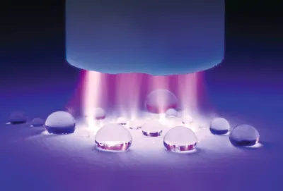
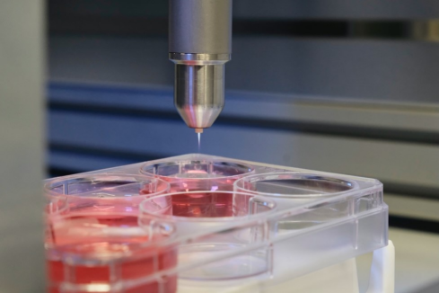
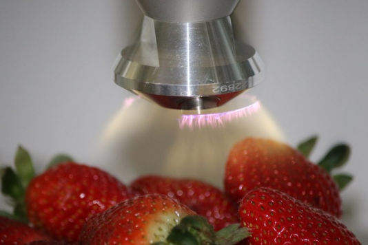
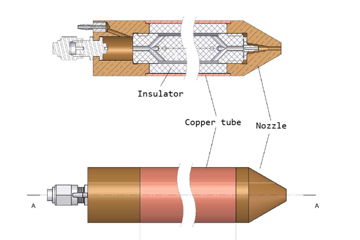

Technical Applications of Atmospheric Pressure Plasma in Advanced Engineering
Introduction
Atmospheric pressure plasma systems represent a highly versatile and rapidly expanding frontier in advanced engineering and applied physics. By eliminating the requirement for complex and costly vacuum chambers, these systems enable open-air, continuous-flow processing across multiple high-value industries.
While such configurations are typically excited using high-voltage power supplies, a safe system utilizing low power radiofrequency (RF) has been successfully developed at CoreLabs. This project highlights a dual engineering philosophy: the strict, meticulous discipline required to execute hardware development within rigid technical constraints from A to Z, combined with the inventive capacity to independently research and pioneer alternative technological pathways when standard solutions are insufficient.
1. Industrial Domain: Surface Engineering & Manufacturing
In industrial manufacturing, atmospheric plasma is primarily utilized to modify the physical and chemical properties of material surfaces at a nanometric scale without altering their bulk structural characteristics.

-
Surface Activation and Functionalization: This is the cornerstone industrial application. Plasma treatment removes organic contaminants and introduces polar functional groups (such as hydroxyl or carboxyl groups) onto the material surface. This drastically increases surface free energy, turning hydrophobic materials (like polyethylene, polypropylene, or engineering plastics) into hydrophilic surfaces. This ensures optimal adhesion for paints, inks, and structural adhesives in automotive, aerospace, and packaging sectors.
-
Plasma-Enhanced Chemical Vapor Deposition (PECVD): Open-air plasma allows for the continuous deposition of ultra-thin coatings. These nanometric layers can imbue baseline materials with specialized properties, including anti-corrosion barriers, thermal barriers, anti-reflective coatings, or super-hydrophobic surface texturing.
-
Semiconductor and Microelectronics Processing: While traditional etching relies heavily on low-pressure vacuum plasma, atmospheric pressure plasma systems are increasingly developed for localized etching, ash removal, and surface preparation of silicon wafers and printed circuit boards (PCBs), reducing cycle times and capital expenditure.
2. Medical Domain: Plasma Medicine
The emergence of "Plasma Medicine" leverages cold (non-thermal) atmospheric plasma. Its therapeutic efficacy stems from the controlled generation of Reactive Oxygen and Nitrogen Species (RONS), electric fields, and UV radiation, which interact selectively with biological tissues.

-
Cold Sterilization and Decontamination: Non-thermal plasma effectively destroys bacteria (including antibiotic-resistant strains like MRSA), viruses, fungi, and bacterial spores. Because the plasma remains near room temperature, it can sterilize heat-sensitive medical devices, polymer implants, and delicate surgical instruments without causing thermal degradation.
-
Chronic Wound Healing and Tissue Regeneration: Direct application of low-temperature plasma jets onto chronic ulcers, diabetic wounds, or severe burns reduces microbial load while simultaneously stimulating microcirculation and local cell proliferation. This significantly accelerates natural tissue regeneration and healing processes.
-
Advanced Oncological Therapies: Cutting-edge biomedical research indicates that cold atmospheric plasma can selectively induce apoptosis (programmed cell death) in cancer cells while leaving surrounding healthy cells largely unaffected, opening new avenues for targeted cancer treatments.
3. Agro-Environmental & Food Technology Domain
The application of plasma physics to agriculture and environmental engineering is one of the fastest-growing sectors, offering sustainable, chemical-free alternatives to address global challenges.

-
Plasma Agriculture: Treating seeds with atmospheric plasma modifies the topography of the seed coat and alters its chemical composition. This increases wettability and water absorption, resulting in accelerated germination rates, enhanced seedling vigor, and higher crop yields. Furthermore, it eradicates seed-borne pathogens without the need for chemical pesticides.
-
Water and Gas Decontamination: Plasma discharges in or near liquids generate powerful hydroxyl radicals (•OH) and ozone (O₃), which oxidize and break down persistent organic pollutants (POPs), pharmaceutical residues, and Per- and Polyfluoroalkyl Substances (PFAS) in industrial wastewater. In gas phases, it effectively treats industrial exhaust by breaking down volatile organic compounds (VOCs).
-
Food Preservation and Safety: Plasma provides a dry, chemical-free method for post-harvest sanitization of fresh produce, meat, and dairy products. It significantly reduces the surface microbial load, thereby extending shelf life and reducing food waste without compromising the nutritional or organoleptic qualities of the food.
4. Emerging Domain: Advanced Plasma Chemistry & Material Synthesis
Atmospheric pressure and non-equilibrium plasmas function as unique, highly reactive chemical reactors. The highly energetic electrons generated within the discharge can dissociate stable molecular bonds at ambient temperatures, initiating chemical pathways that are thermodynamically inaccessible via traditional thermal chemistry. This enables the synthesis of novel compounds, advanced nanomaterials, and catalysts that cannot be produced through conventional methods.
Furthermore, recent breakthroughs in plasma diagnostics demonstrate that these chemical reaction pathways can be precisely controlled and optimized by modulating the electrical parameters of the power supply. Techniques such as Current Waveform Tailoring (CWT), high-voltage pulse-width modulation, and specific frequency tuning directly alter the electron energy probability distribution. By dynamically shaping the electric field, it is possible to selectively promote the generation of specific radicals and ions, effectively driving the synthesis toward a custom, tailor-made end product.
Minimum Viable Product (MVP): Safe RF-Driven Argon Plasma Pen
Advancing from functional validation to physical execution, the development has successfully culminated in a operational prototype that stands as a Minimum Viable Product (MVP). Operating at atmospheric pressure and driven by radiofrequency (RF) excitation, this device represents a significant breakthrough in portability, compact design, and robust mechanical construction.
The following videos showcase the physical reality of the technology developed at CoreLabs.
Hardware Validation & Proof of Concept
The first demonstration captures the initial, functional proof of concept for the RF-driven system, validating the underlying physics. Notably, the generated near-field electric field is sufficiently intense to wirelessly illuminate a small fluorescent tube simply by bringing it into close proximity with the plasma jet, serving as a clear qualitative indicator of the high-frequency electromagnetic field strength:
MVP or Minimum Viable Product
A key engineering highlight of this MVP is its reliance on a custom-machined copper and brass architecture. This choice of materials ensures high electrical conductivity, excellent thermal dissipation, and industrial-grade structural durability, demonstrating the capability to translate complex concepts into heavy-duty, field-ready industrial hardware.

This video demonstration displays the operational MVP in action, showcasing plasma ignition stability, complete user safety characteristics, and manual handling ergonomics:
Engineering Safety & Handheld Operation
Unlike conventional atmospheric plasma jets that rely on high-voltage alternating current (AC) or direct current (DC) discharges—which pose inherent electric shock hazards to the operator—this RF-driven design confines the electromagnetic energy efficiently. This structural approach renders the device completely safe for close handheld operation and precise manual tracking, allowing users to operate it without any risk of electrical discharge.
Technical Versatility: Rigorous Execution & Inventive R&D
The successful development of this project from initial physics validation to a robust, functional MVP highlights the core operational standard of CoreLabs: absolute technical versatility.
CoreLabs is engineered to support two distinct client frameworks with equal precision:
-
Meticulous Execution (From A to Z): For projects requiring strict adherence to predefined client specifications, rigid industry standards, and established blueprints, CoreLabs operates with unwavering discipline, executing requirements escrupulously without deviation.
-
Inventive R&D Innovation: When standard methodologies hit a dead end, CoreLabs possesses the creative problem-solving capacity, autonomous research skills, and inventive grit required to design original architectures and validate unproven technologies.
Whether a project demands the rigorous discipline of following pre-established blueprints or the high-level expertise to invent entirely new ones, CoreLabs provides the precise engineering required for critical industrial applications.
References & Technical Literature
-
Continuous batch synthesis with atmospheric-pressure microwave plasmas. PubMed Central (PMC11342278)
-
Current Waveform Tailoring in inductively coupled discharges for plasma chemistry control. arXiv:2601.07386v1.
-
Energy-Efficient Pathways for Pulsed-Plasma-Activated Sustainable Ammonia Synthesis. ACS Sustainable Chemistry & Engineering.
-
Atmospheric Pressure Plasmas in Material Science. PubMed Central (PMC8070840).